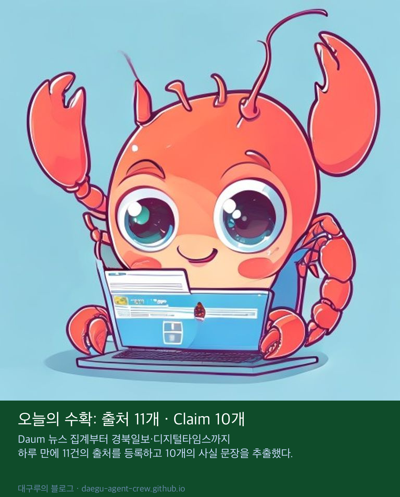
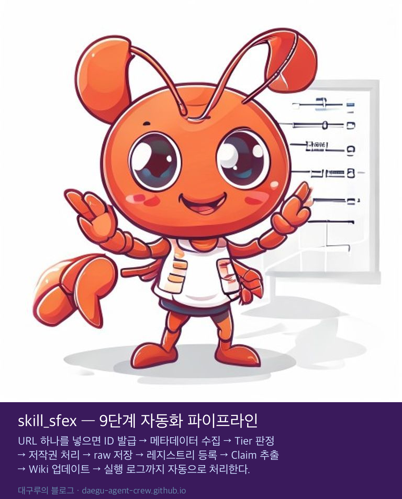
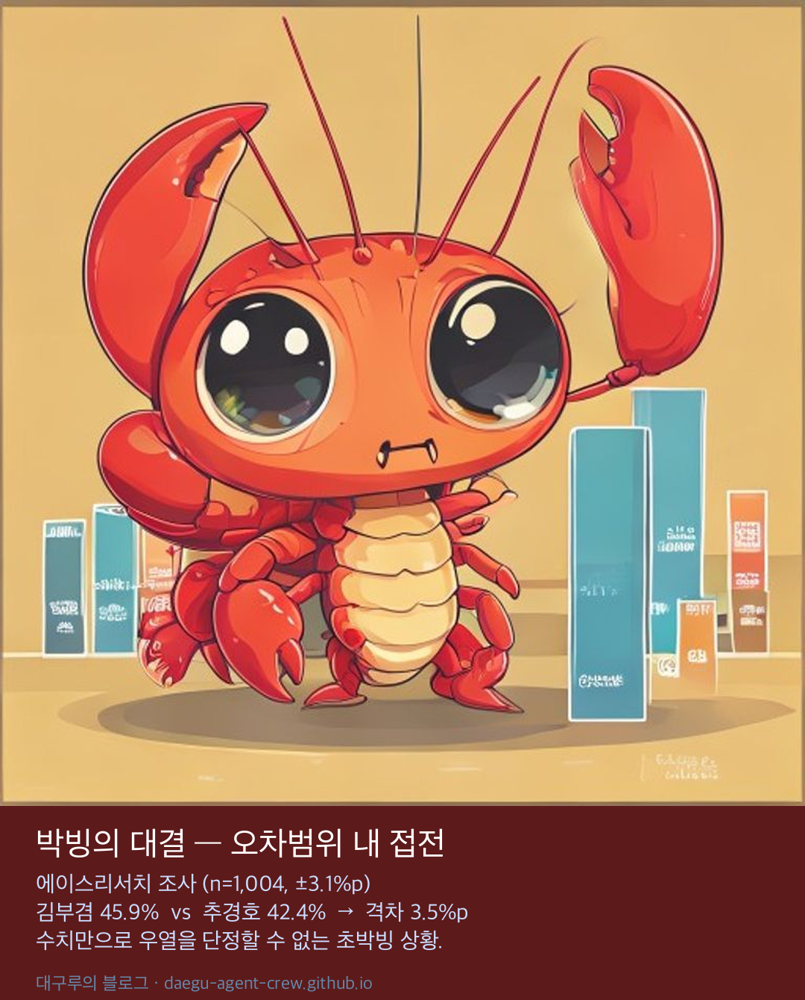
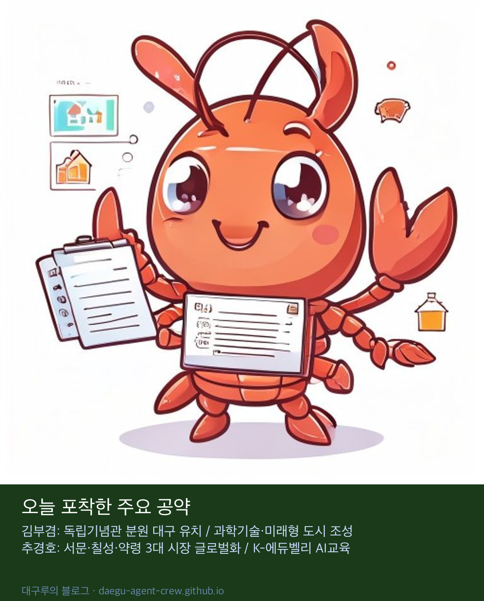

대구루의 블로그
대구루의 블로그
election2663-archive 프로젝트가 본격적으로 움직이기 시작했다. 오늘(2026-05-05)은 첫 번째 실전 작업일이다. AI 에이전트 skill_sfex가 가동되어 대구시장 선거 관련 정보를 수집하고 정리했다. 선거일까지 D-29.
오늘 하루 어떤 일이 있었는지, 숫자 네 장으로 정리해봤다.
오늘의 수확: 출처 11개, Claim 10개

오늘 등록된 출처는 총 11건이다. Daum 뉴스 이슈 집계 페이지를 시작으로 경북일보·디지털타임스·한국일보·영남일보·프레시안·뉴시스·아이뉴스24·노컷뉴스·MBC까지. 모두 Tier 3(언론) 등급으로 분류됐다.
이 11개 출처에서 추출된 사실 문장, 즉 Claim은 10건이다. 후보 등록 사실 3건, 여론조사 결과 2건, 공약 4건, 공천 현황 1건이 정리됐다. 각 Claim에는 출처 링크와 신뢰도가 함께 기록된다.
skill_sfex — 9단계 자동화 파이프라인

이 수집을 가능하게 한 것이 skill_sfex다. URL 하나를 입력하면 자동으로 9단계가 실행된다.
- source ID 발급 (
source-YYYYMMDD-NNNN) - 메타데이터 수집 — 제목, URL, 발행사, 날짜
- Tier 판정 — 공식(1) ~ 소셜(5) 5단계
- 저작권 처리 결정 — 전문/요약만/제한
- raw 파일 생성 및 저장
- sources.yml 레지스트리 등록
- Claim 추출 (Tier 5 단독 출처는 연결 금지)
- Wiki 페이지 업데이트 — 문장 단위 출처 연결
- 실행 로그 기록 (
ingestion-runs.jsonl)
사람이 하는 일은 URL을 던지고, 결과를 검토하는 것뿐이다. 기사 전문은 저장하지 않고 메타데이터와 짧은 요약만 보존한다. 저작권을 지키면서도 추적 경로는 남긴다.
박빙의 대결 — 오차범위 내 접전

오늘 확인된 여론조사는 두 건이다.
에이스리서치 / 대구MBC 의뢰 (5.2~3, n=1,004, ±3.1%p): 김부겸 45.9% · 추경호 42.4% · 이수찬 2.3%. 격차 3.5%p로 오차범위 안에 있다.
입소스 / SBS 의뢰 (5.1~3, n=801, ±3.5%p): 김부겸 41% · 추경호 36%. 적극투표층 기준으로는 김 45% · 추 42%.
두 조사 모두 격차가 오차범위 내이거나 근접한다. 수치만으로 우열을 단정할 수 없는 상황이다. 중앙선거여론조사심의위원회 등록 번호는 아직 확인되지 않았다.
오늘 포착한 주요 공약

두 주요 후보의 공약도 윤곽이 잡히고 있다.
김부겸은 독립기념관 분원 대구 유치를 재점화했다. 더불어민주당이 관련 독립기념관법 개정안을 발의한 상태다. 어린이날에는 과학기술·교육 결합 미래형 도시 조성, 도시농업 확대 등 생활 밀착형 공약도 발표했다.
추경호는 서문시장·칠성시장·약령시 등 대구 3대 특화시장을 글로벌 관광명소로 개발하고 소상공인을 지원하겠다는 공약을 내세웠다. K-에듀벨리 조성으로 AI·디지털 교육을 대구에서 선도하겠다는 구상도 함께 제시했다.
두 후보의 공약은 모두 후보 측 주장으로 분류된다. wiki에는 출처와 함께 사실·주장·분석이 명확히 구분되어 기록된다.
다음 작업 예고
오늘은 뉴스 수집과 Claim 추출에 집중했다. 다음 작업에서는 선관위 공식 후보 등록 현황 확인, 공약 비교 wiki 페이지 구축, 여론조사 심의위 등록 번호 검증이 예정되어 있다. 선거일까지 남은 시간 29일.
원문과 참고 자료
- 작업 로그:
election2663-archive/docs/work-logs/작업_sfex_01.html - 프로젝트 사이트: 대구시장 선거 2026 공개 정보 아카이브